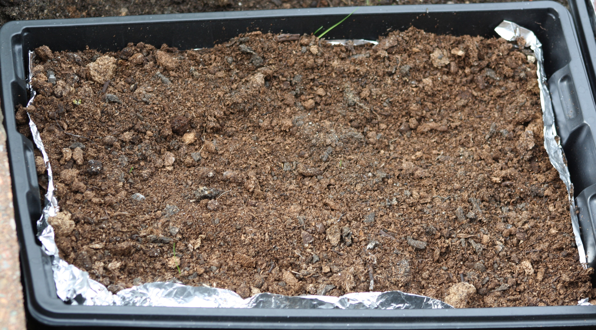
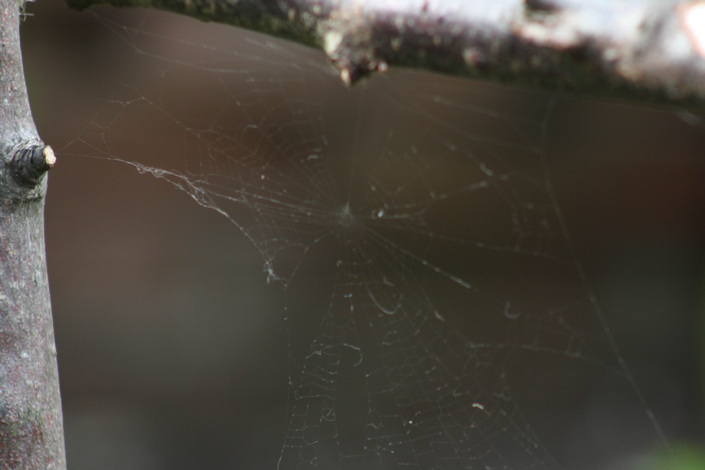
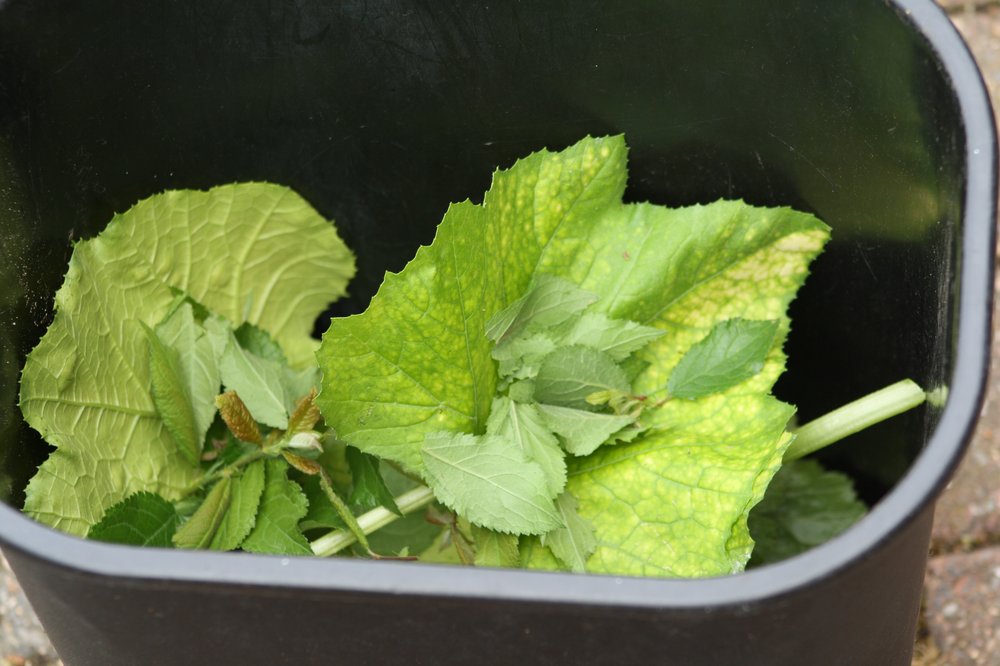
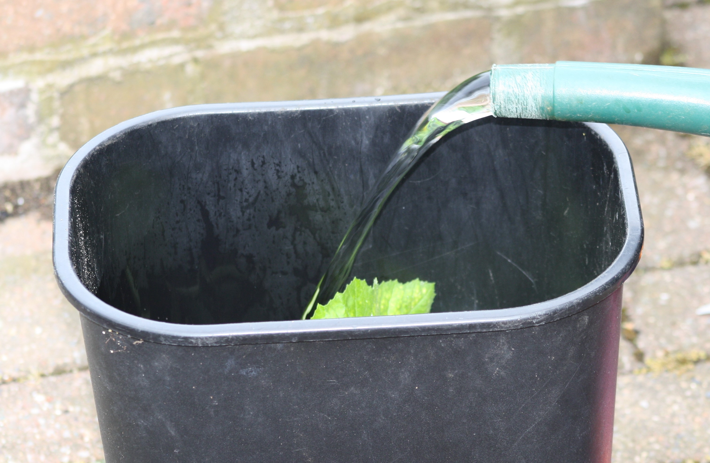
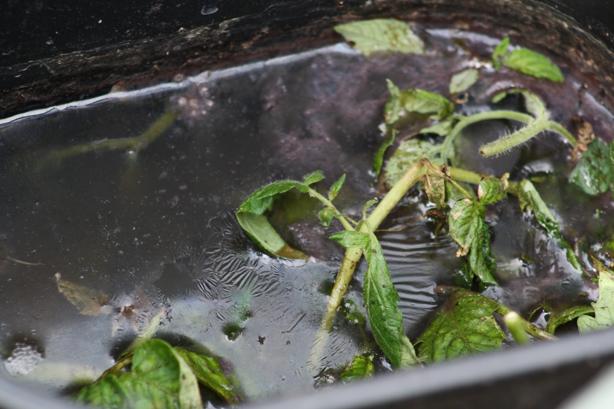

Time for an update.
23-Jun-2017 | Milku
Have our 30DaysWild activities worked?
It's Day 23 of 30 Days Wild and it's time to review some of the activities we started early in June.
One of our first activities for 30 Days Wild was trying to gather some seed hitchhikers from wellies. ( Click to see the original post about seed hitchhikers). We’ve left the mud scrapings in a tray of compost for about three weeks now and can now reveal…
...that only two tiny grass shoots have grown. You have to look very hard to spot them in the photo, but trust me, they’re there. It's a bit disappointing that more seeds didn’t take the opportunity of relocating from Lytham St Annes to Blackpool. I suppose that many humans would think that wasn’t a sensible move either…tsk! Blackpool’s a great place. If you’re not lucky enough to already live here then you should come to visit.
Next up was our spider catcher. This was carefully constructed out of a y-shaped tree branch, with another branch lashed across the top to form an enclosed triangle.

This was set into the garden in the hope that some spiders would move in. There are webs there, albeit that the recent breezes have taken their toll on some of them. You might have to take my word that there is a web in the catcher as, apparently, it was difficult to photograph.
Given their enthusiasm for growing things, if not eating the results, my humans decided to try out making liquid compost. All they had to do was gather some nice green leaves and weeds and leave them to soak in water.
 I think my humans should have covered the bucket because the rain we’ve had will have diluted the concoction. Even so, something is happening in there. It smells dreadful and is attracting flies, but then the instructions my humans are following did warn them about that. It doesn’t look much better.
They still don’t think it’s ready for using on the garden. I think they’re worried that they’ll kill some plants if they do use it. I hope they don’t try it out on things I like to eat until they’re sure it’s OK.